20260911《持世经》
修炼修行民间文化符咒术法菩萨如是观时，不得身若合若散，
不见有所从来、去有所至、有所住处。
不分别是身若过去、若未来、若现在，
则不依止身命，
不贪惜身若我若我所，常离身受。
是菩萨观身空，无我无我所，
是身中我我所不可得故，
是身相不可得。
是菩萨若不得身相，
即不愿身入，身不起作道。
云何为入？是身无有作者无有起者，
是身不作不起相，从众因缘生，
是因缘能和合身，
而是因缘亦虚诳无所有，
颠倒相应空无牢坚。
亦以是因缘故是身得生，
是因缘亦无生无相。
如是观身，即入身无生相中，
入已观身无相，以无相相观身，
知是身无相，相不可得故无生。
是身过去相、未来相、现在相不可得。
何以故？是身无根本，
无一定法可得，是身若此若彼不可得。
如是观时，知身无所从来，亦无所去，
即入身不生不灭道。
——《持世经》
明天回家，
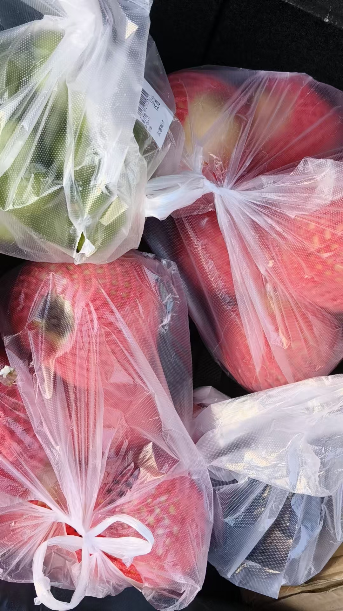
买的甜石榴
不贵3.99
家里七块
软化血管
情王葡萄
大姐，外甥回去
八月初二，是女儿回娘家的日子
正月初二，六月初二，八月初二
增加劳动量
打印教学资料
同时打印读华严经心得
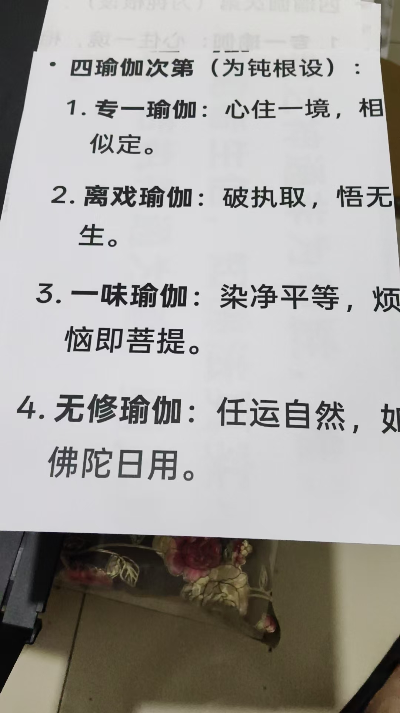
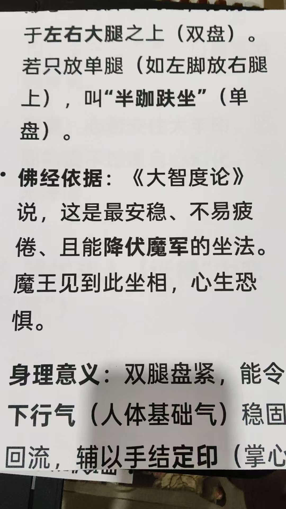
这是论述双盘与结印的重要性
[呲牙][呲牙][呲牙]
刚开始打印，两个孩子说，我身上放出热量
一伸手，手还真的很热
读经，身体在接受信息密码
打印，身体放松，能量转化
绝对又会出现新能力
看下边这几句
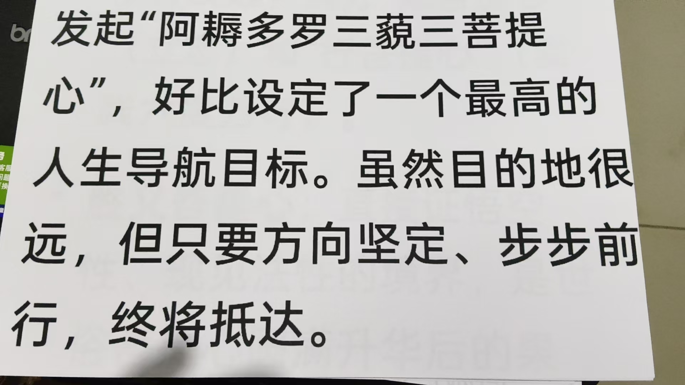
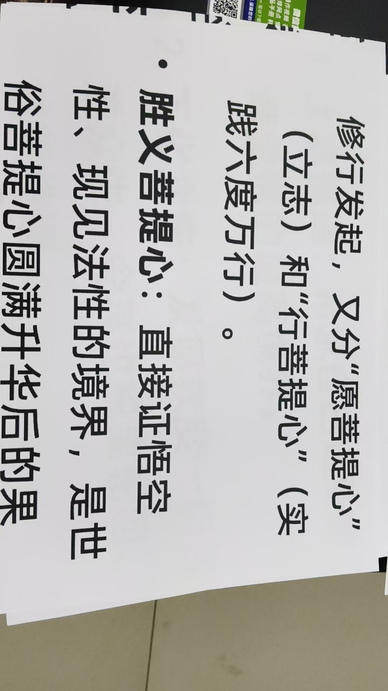
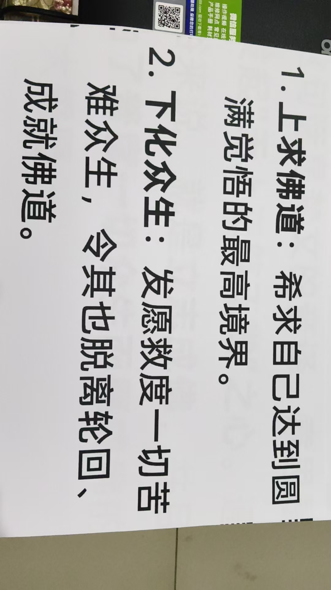
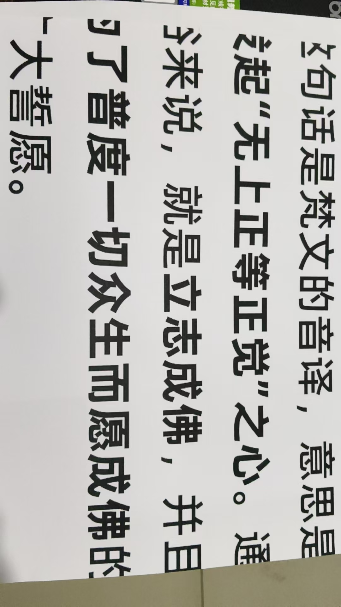
这都是经里没有的，参悟到什么，就简单的记下来
悟到，我所讲的一点都没错
我在找我教学的证据
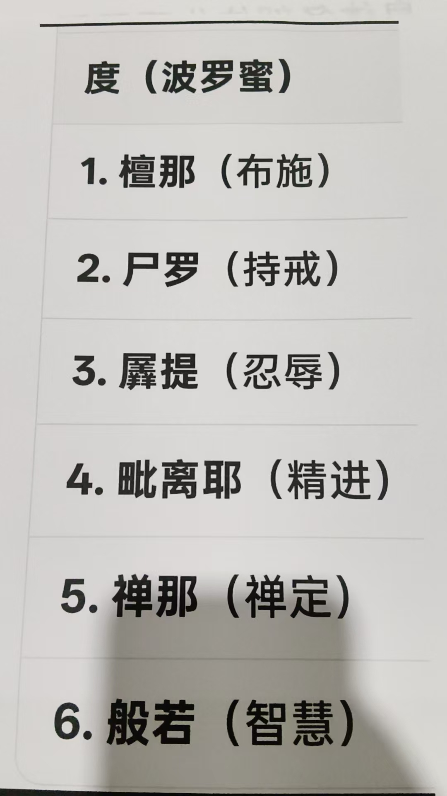
观音六度，十波罗蜜的细节修持
十地菩萨的具体观修
佛的具体观修
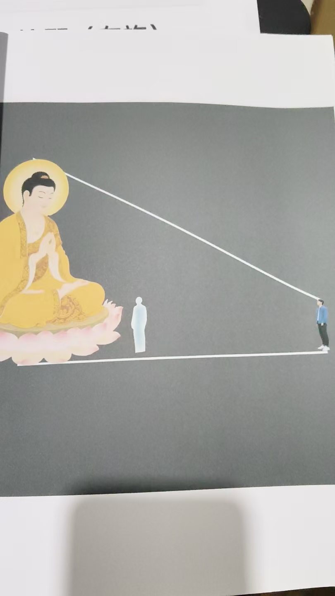
如来
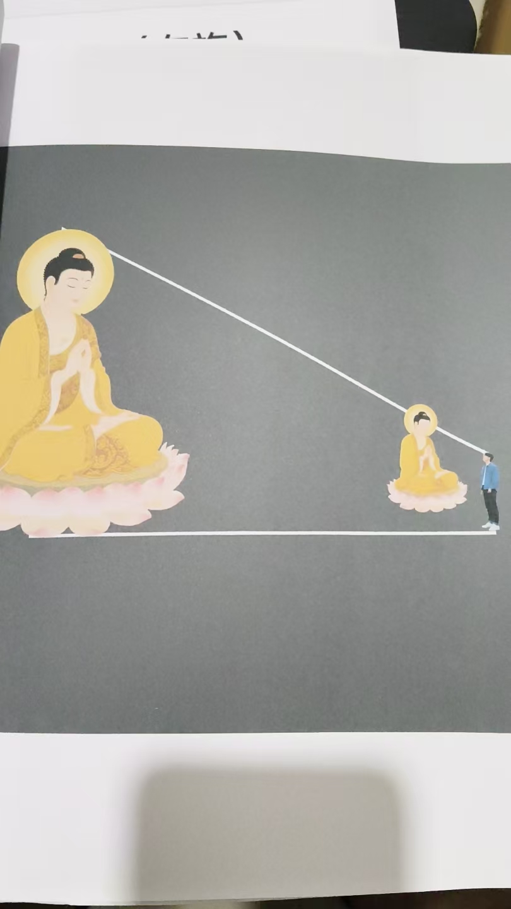
如去
而实无所来去
修成了，也做到了
得到了验证
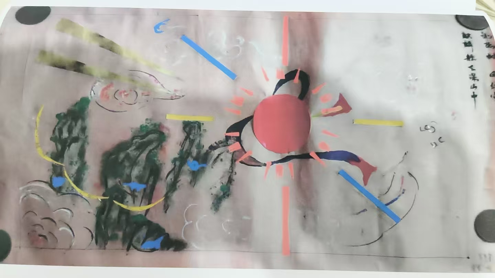
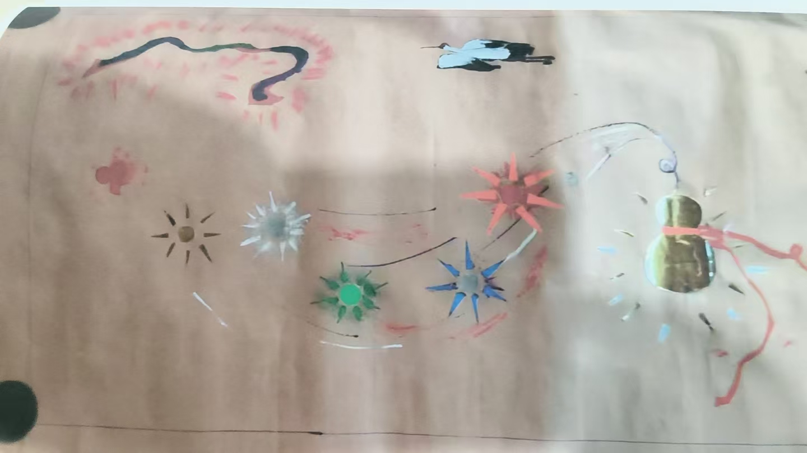
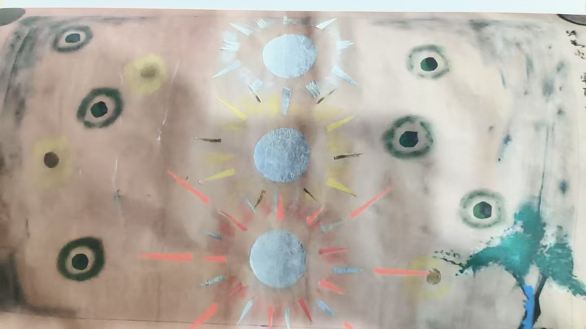
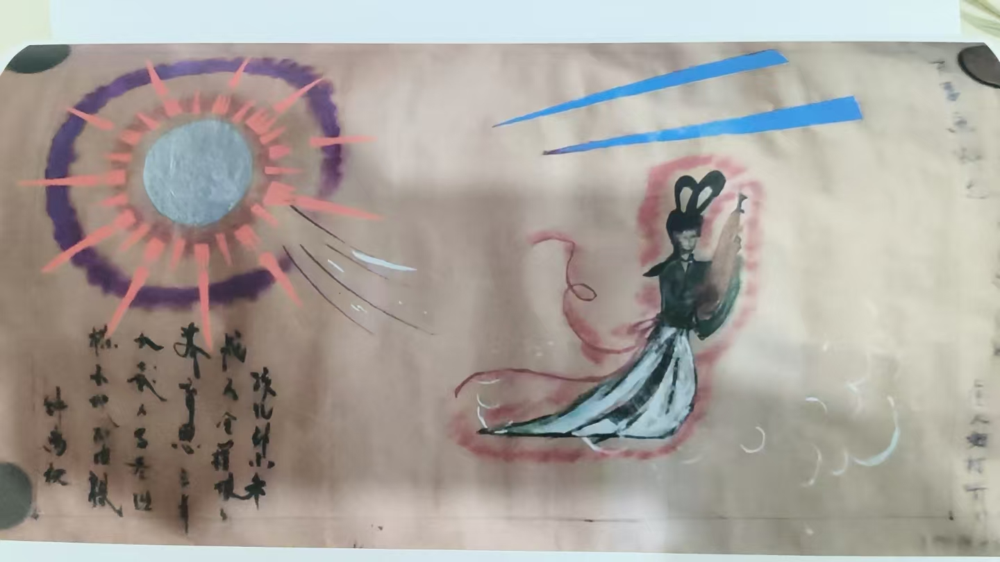
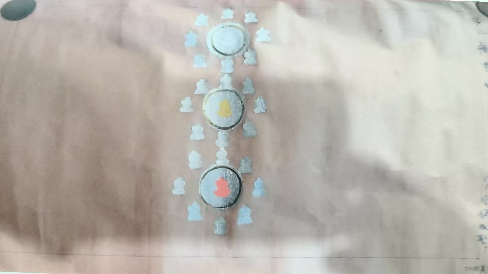
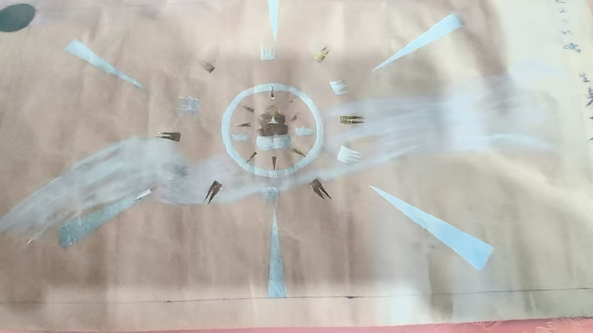
十几岁的时候，看到的，
用贴纸贴出来了
科委师傅非要留下
我回来又做了一份
那个时候，没见过任何书籍
八十年代
@未来可期 我现在修紫金身
[呲牙][呲牙][呲牙]
道家叫带肉大觉
[强][强][强]
佛家叫紫金佛
[强][强][强]
兼修佛道儒
说起来简单，只管放宽心，分身就行
十地菩萨，以分身多少，心法高低定的层次
[憨笑][憨笑][憨笑]
以前，分不清，现在明明白白的了
分身化身无边无数无量，汇聚一身，立地成佛

最后这图就是合一
为啥老想着要成佛呢？
坚定了信心
@Augustus-吉华 不成佛，没事干啊
[憨笑][憨笑][憨笑]
说白了就是吃饱了撑的
菩萨，无我心
利益大众
佛，救宇宙
去旅游玩玩呗。
宇宙就是一个大游戏。
不是只打工，填饱肚子就行
成佛之后就没意思了。
佛之后是紫金身
[憨笑][憨笑][憨笑]
紫金身之后还有
没啥意思的。
[憨笑][憨笑][憨笑]
紫金身后又如何呢[呲牙]
不修，跳不出生老病死，尔虞我诈，坑坑坎坎
修了不仅提升自己，还能救人
佛也有寿命的。
是啊
所以有紫金佛
不生不灭，来去自如
紫金佛再上，聚则成形，化则成光
玩就行了，别太认真。
我说你怎么不修呢，[憨笑][憨笑][憨笑]
没啥太大区别的。
只顾自己玩，人生好时光有几年
身体问题，用不了到四十岁，哪有身体没有问题的
运势问题，最多也就三十年河东，三十年河西
改变不了命运，你看老许，
这就是人
世界是个大型网络游戏，要有优秀玩家的心态，别太执着。
钱还没捂热呢，没了
没事儿，真人，您继续修炼。
[呲牙][呲牙][呲牙]
修炼对您来说就是玩儿嘛。
也对
无所求
一片玩心
不过，人间游戏，是统治者设定的
老想超越六道轮回成神成佛，就还是会被六道轮回，神佛这些概念给抓住转进去。
跳不出他的楼贷，车贷，学贷，孩贷……
@Augustus-吉华 你没有看一下，国人没有贷款的有几个
生老病死六道轮回都是自然现象，你别在这些事情上倾注能量，就不会太痛苦。或者说身体痛苦，心理没那么痛苦，一辈子，多少世，几万年很快就过去。
旅游，真不是一般人的游戏
[呲牙][呲牙][呲牙]几万年[疑问][疑问][疑问]
不足三万六千天
轮回几百几千世就是几万年啊。
也很快的。
每天都在倒计时
您看您就被这种所谓“倒计时”的概念困住了。
这些概念也是被设计出来骗我们的。
[呲牙][呲牙]
现实啊
您想啊，您都轮回多少世了，现在不是越来越好嘛。
下一世可能更好。
别怕。
你年轻，感觉不到时间紧迫感[呲牙][呲牙]
别害怕死亡和轮回。
[强]
关键是好好体验每个当下。
[呲牙][呲牙][呲牙]道理对
死不可怕
喝了点酒，有点醉了，乱说话，真人不要怪罪啊[呲牙][呲牙][呲牙][拥抱][拥抱][拥抱][爱心][爱心][爱心]
我邻居兄弟三个，一个心脏堵了两根，一个脑子两次血栓，都比我小几岁
还有一个身体好，打工把指头割去三根半
人间百苦
并不是说死可不可怕，问题是活着难受啊
我这很少喝酒了，
肉吃的少了，压不住，二两就上头
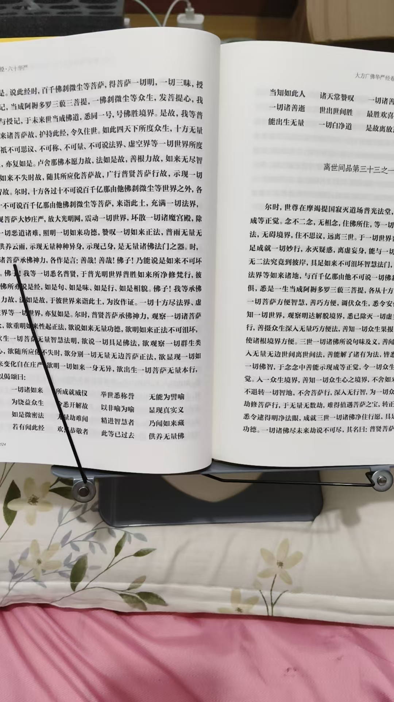
后边这些就读的快了
四十华严，把重点都讲过了
六十，八十，只不过讲的更细
这样就明白了，这些烧出舍利子来的，也就几百颗，几百颗就修成了几百个佛身
几百个佛身，仅能是二地菩萨
济南那几个，只有几十颗，算初地菩萨
根本修不成佛
[呲牙][呲牙][呲牙]果位，就这么定了
星云大师，几颗舍利子，初地菩萨果
也不错了，大大还接见过他
六祖，肉身菩萨
释迦牟尼，光身佛果，肉身灭